voces que engañan
¿Querés descubrir
qué puede pasar
con una simple
voz?
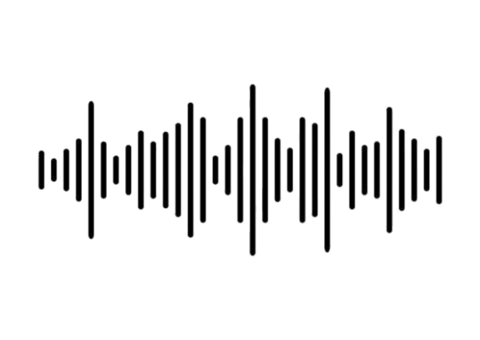
¿Querés descubrir
qué puede pasar
con una simple
voz?
Para recorrer esta experiencia, solo deberas escuchar desde el
telefono y marcar los número del mismo cuando se les
indique.

marque los números que se muestran en el teléfono para ir al mensaje.
¿Qué hago si me piden mis datos personales por teléfono?
Marca los números que se ven en en la pantalla en el teléfono.
Las Modalidades de engaño más comunes son: Se hacen pasar por empleados de un call center.
Te engañan diciendo que un familiar está en peligro.
Te alertan falsamente sobre un supuesto riesgo en tu cuenta bancaria.


Marca 0 para atender la llamada
Marca 9 para ignorar la llamada
Seleccioná estos número en el telefono
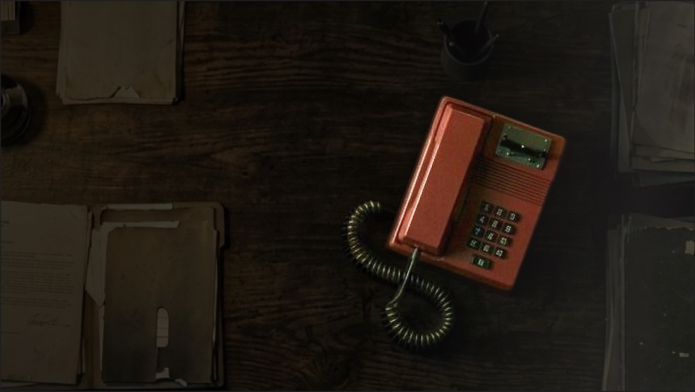
El vishing es una estafa telefónica que utiliza falsas emergencias y voces clonadas con IA para engañar a las víctimas y robar sus datos o dinero.


En 2023, CABA registró más de 1.600 denuncias por delitos contra la identidad digital.
443 fueron por suplantación de identidad mediante perfiles falsos.

¿Qué hago si me piden mis datos personales por teléfono?
Marca los números que se ven en en la pantalla en el teléfono.
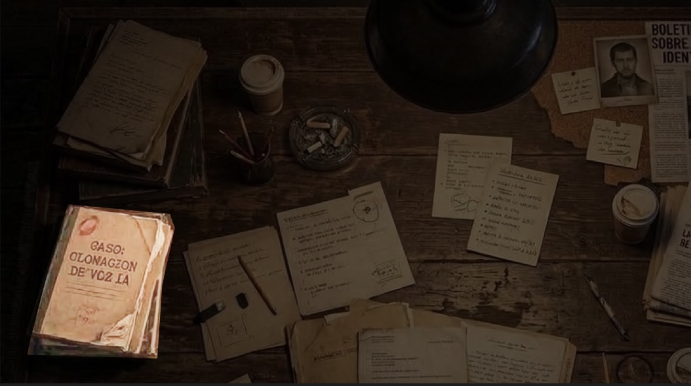
La clonación de voz con IA permite imitar la voz de una persona y generar audios falsos muy realistas. Para realizar estas estafas, los delincuentes obtienen nombres y teléfonos de redes sociales, bases de datos y formularios.

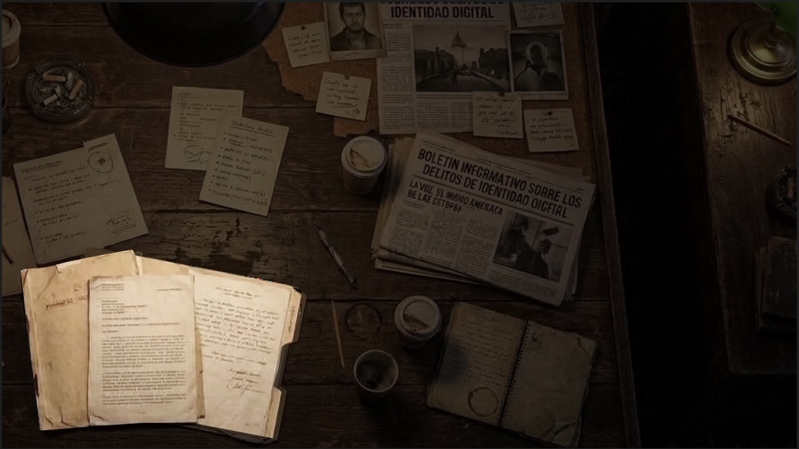
Una investigación de la Fiscalía N.º 1 de Quilmes permitió desarticular una estafa millonaria a través de WhatsApp, en la que se utilizaron audios generados con inteligencia artificial, capaces de imitar con precisión la voz original para engañar a las víctimas.
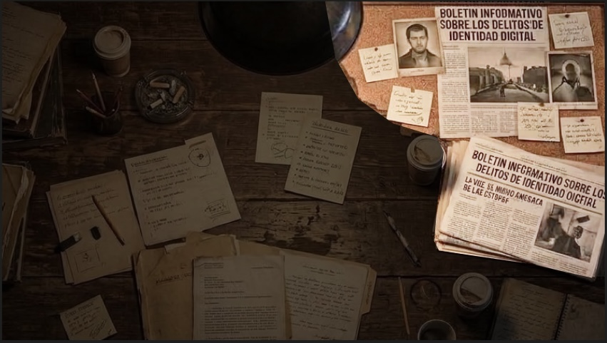
Una persona te llama por teléfono e intenta tener tus datos personales, financieros o los nombres de tus familiares, mediante engaños.
Los estafadores utilizan técnicas para manipularte y conseguir que compartas información sin darte cuenta.
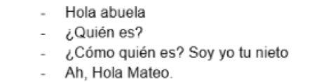
Marca 0 para atender la llamada
Marca 9 para ignorar la llamada
Seleccioná estos número en el telefono
Suelen inventar urgencias, como que un familiar está en peligro o una necesidad inmediata, haciendo que actúes a través de intermediarios para presionarte y lograr que actúes sin pensar.
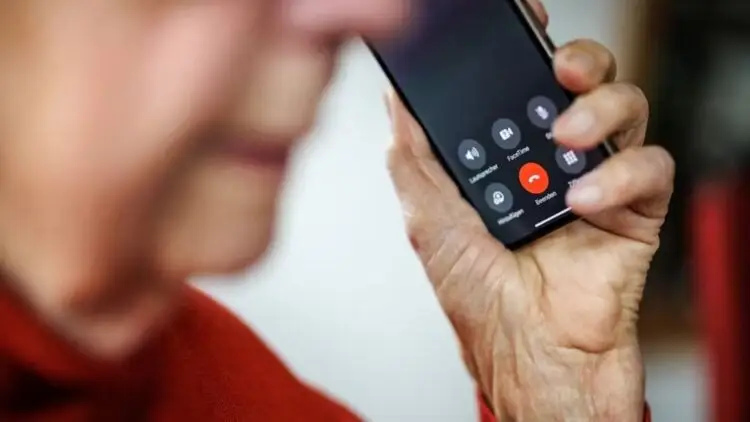
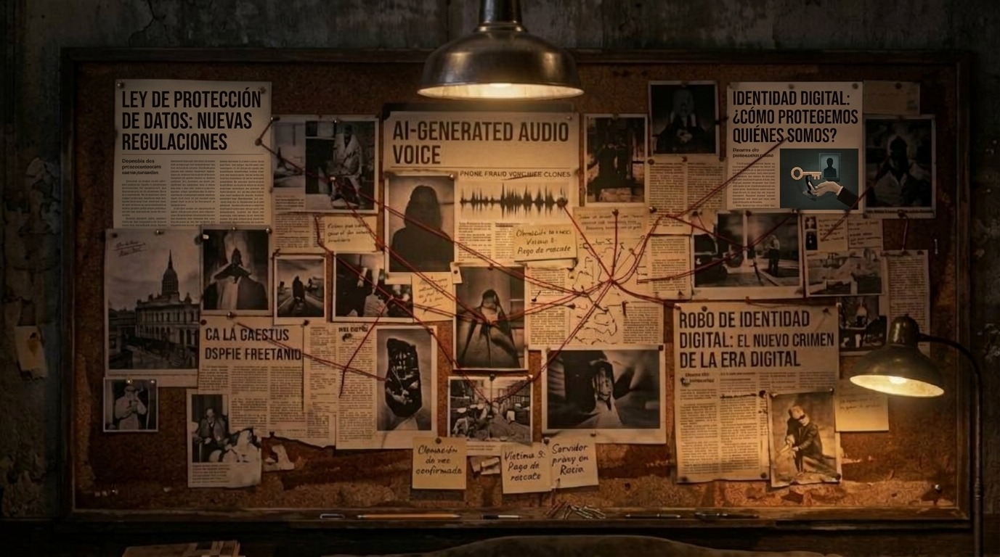
¿podemos decidir cómo y para qué se utiliza?
Marca los números que se ven en en la pantalla en el teléfono.
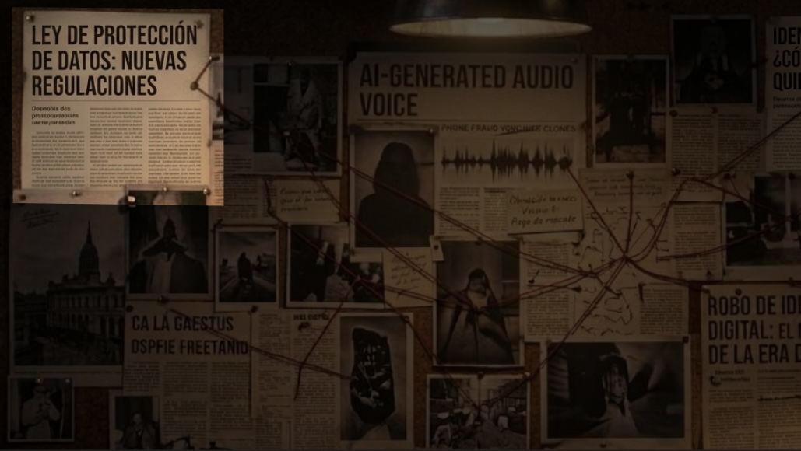
La Ley 25.326 de Protección de Datos Personales protege la información que permite identificarte frente a usos no autorizados. Esto incluye tu imagen y los datos biométricos, como los rasgos de tu voz, que pueden utilizarse para identificarte.

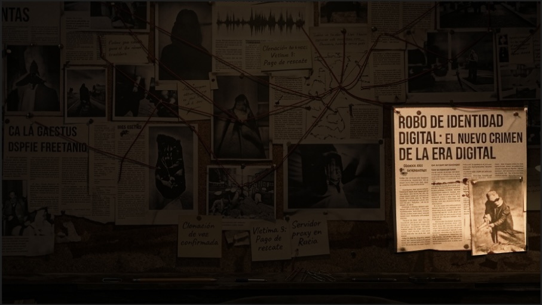
El periodista Alejandro Fantino denunció en 2025 un video creado con IA que imitaba su imagen y voz para promocionar falsas inversiones en redes sociales. Tras advertir sobre la estafa, presentó una denuncia legal en la Ciudad de Buenos Aires.

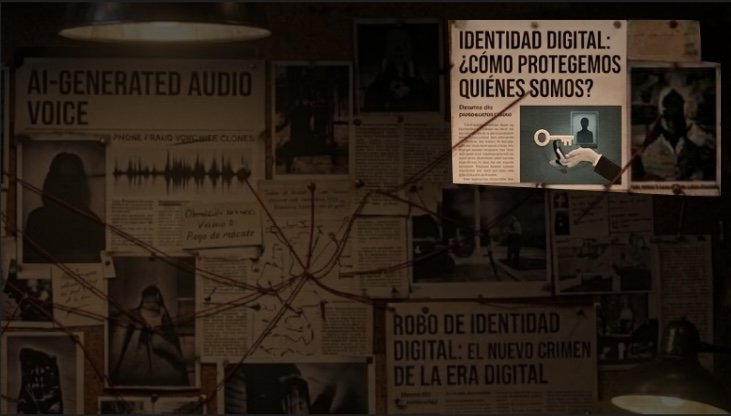
La identidad digital se construye a partir de información que compartimos en internet como datos que aparecen en nuestras redes, por ejemplo:
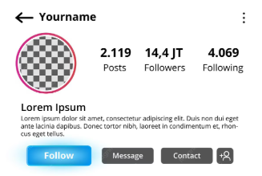
Y contenidos digitales como, por ejemplo:
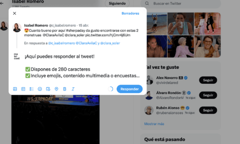

ESTAFADOR: Buenas tardes, le llamamos del área de seguridad de su banco porque detectamos un movimiento sospechoso en su cuenta. ¿Me podría confirmar su nombre, por favor?
ESTAFADOR: Hola, ¿hablo con un familiar de [nombre]? Te llamamos porque tuvo un problema grave y necesitamos confirmar sus datos para poder asistirlo.